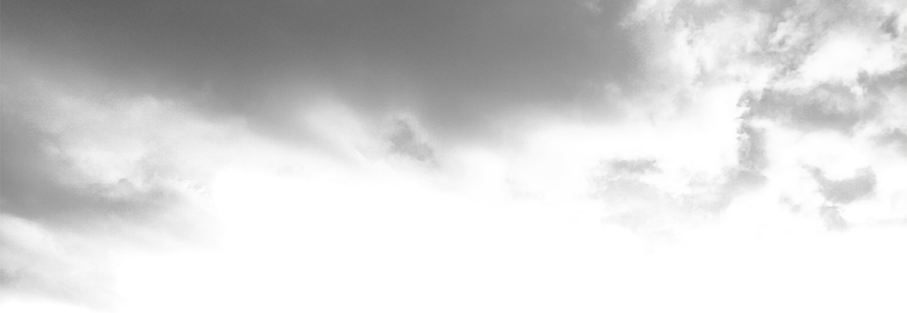
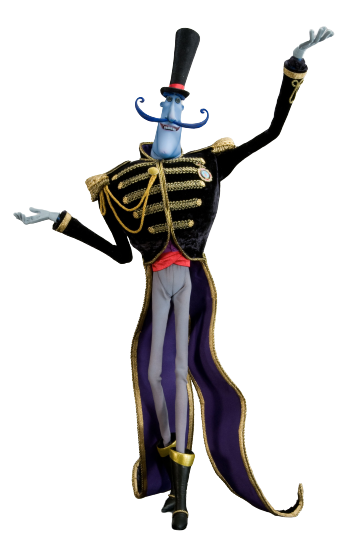
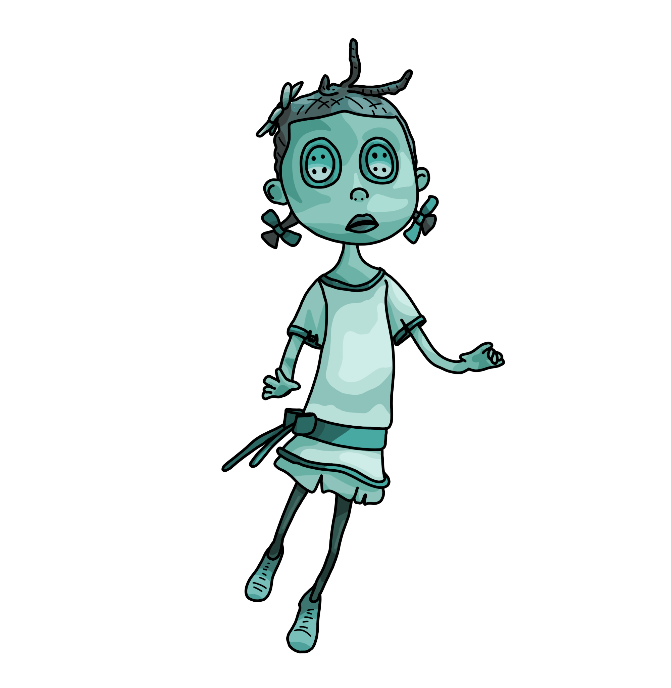
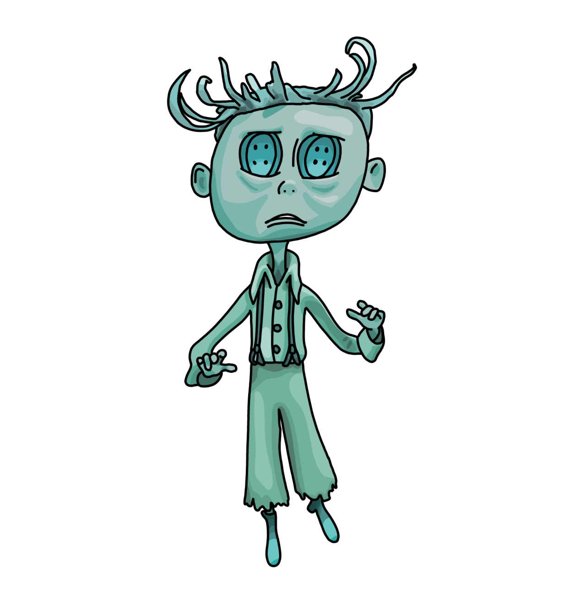
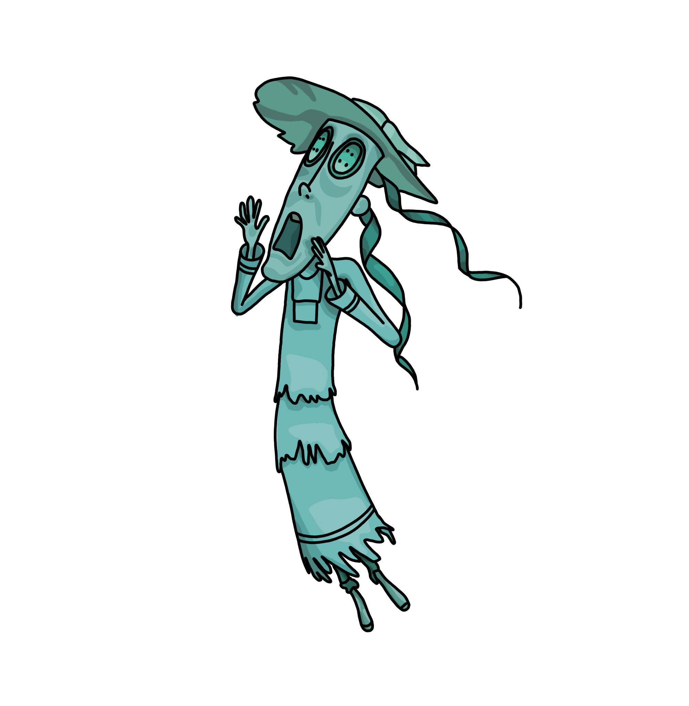

Coraline e o Mundo secreto
Atividade 4 de Pweb
Imersão no universo de
Coraline

Welcome to the pink palace!

Abra a porta para o outro mundo...
Acompanhe os ratinhos para o circo do senhor Bobinsky...

Conheça as crianças fantasma...


